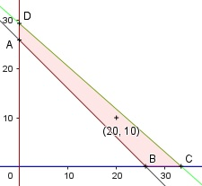

Aufgabe 66 Für eine Feier mit 26 Personen stehen für Getränke 25 € zur Verfügung. Eine Dose Orangensaft kostet 0,75 €, eine Dose Limonade 0.85 €. Die Anzahl der Dosen soll größer als die der Teilnehmer sein. Ist diese Kombination möglich? O 20 L 10? x = Anzahl Orangensaft y = Anzahl Limonade Bedingungen: 1. x > 0 x ∈ ℕ 2. y > 0 y ∈ ℕ 3. x + y > 26 4. 0,75x + 0,85y ≤ 25

Die Eckpunkte B, C, D und E bilden das Planungs- gebiet, das alle Ungleichungen erfüllt. Eckpunkt A: Randgerade 1. geschnitten mit Randgerade 3. 0 + y = 26 (0|26) Eckpunkt B: Randgerade 2. geschnitten mit Randgerade 3. x + 0 = 26 B(26|0) Eckpunkt C: Randgerade 2. geschnitten mit Randgerade 4. 0,75x + 0,85 * 0 = 25 |:0,75 1 x = 33--- 3 1 C(33---|0) 3 Eckpunkt D: Randgerade 1. geschnitten mit Randgerade 4. 0,75 * 0 + 0,85y = 25 |:0,85 7 y = 29---- 17 7 D(29----|0) 17 Ja, diese Kombination ist möglich. Der Punkt (20|10) liegt im Planungsgebiet, weil er alle Ungleichungen erfüllt. 1. 20 > 0 2. 10 > 0 3. 20 + 10 > 26 4. 0,75 * 20 + 0,85 * 10 = 23,5 ≤ 25